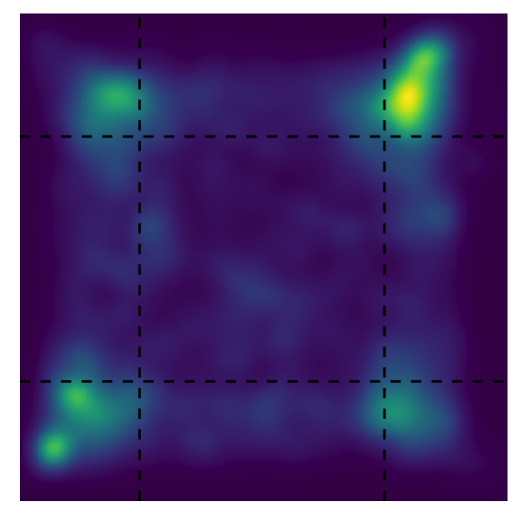
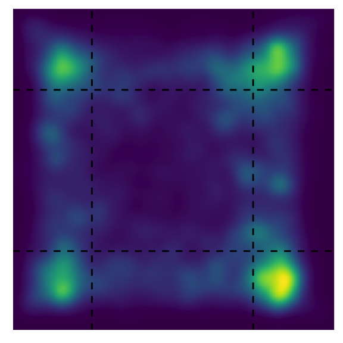
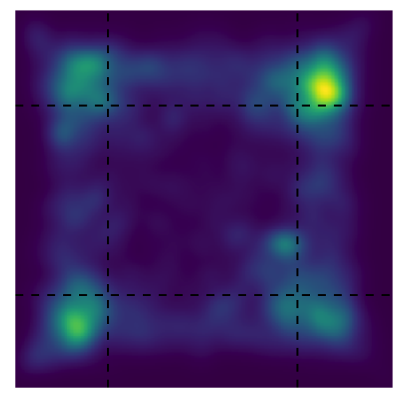
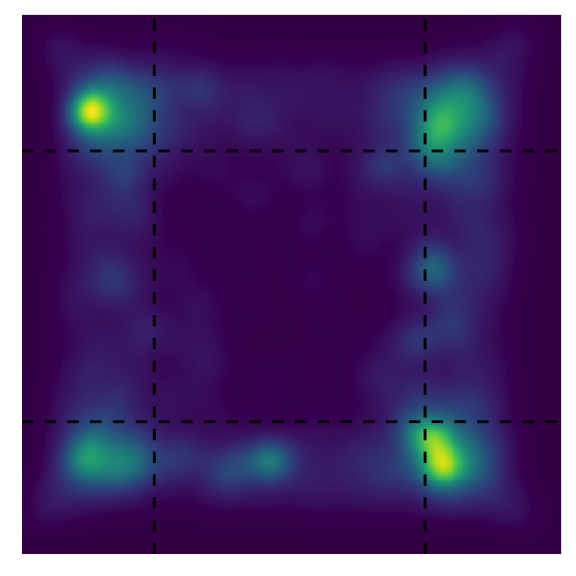
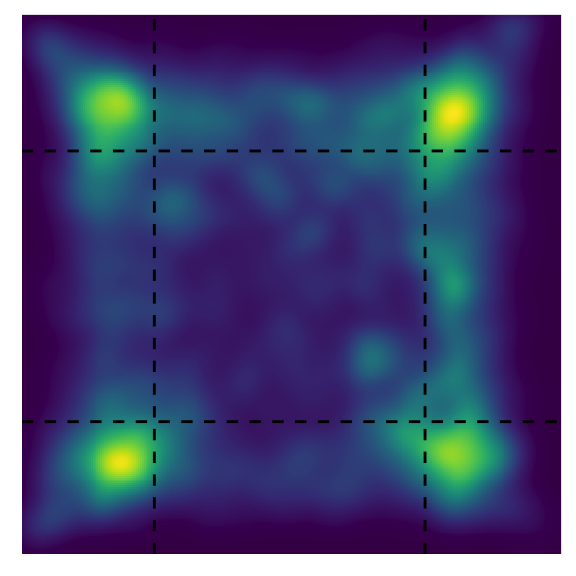
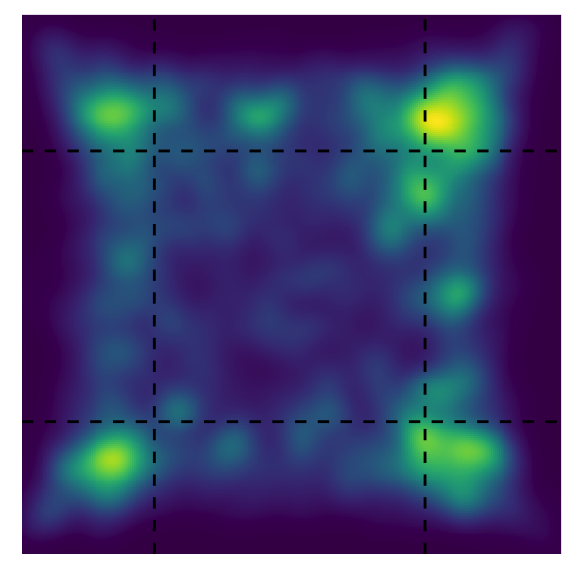
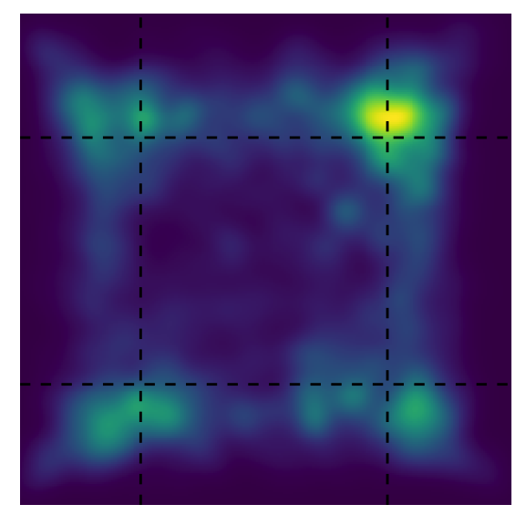
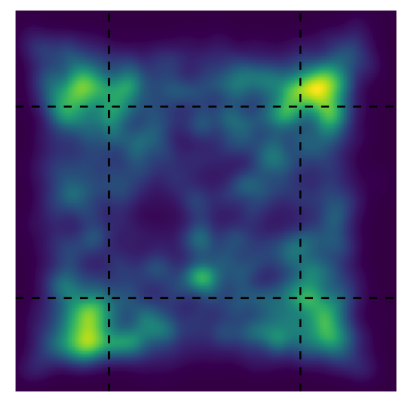

Last updated: 2024-02-21
Checks: 7 0
Knit directory:
CorticalAmygdala_pipelines/
This reproducible R Markdown analysis was created with workflowr (version 1.7.1). The Checks tab describes the reproducibility checks that were applied when the results were created. The Past versions tab lists the development history.
Great! Since the R Markdown file has been committed to the Git repository, you know the exact version of the code that produced these results.
Great job! The global environment was empty. Objects defined in the global environment can affect the analysis in your R Markdown file in unknown ways. For reproduciblity it’s best to always run the code in an empty environment.
The command set.seed(20220906) was run prior to running
the code in the R Markdown file. Setting a seed ensures that any results
that rely on randomness, e.g. subsampling or permutations, are
reproducible.
Great job! Recording the operating system, R version, and package versions is critical for reproducibility.
Nice! There were no cached chunks for this analysis, so you can be confident that you successfully produced the results during this run.
Great job! Using relative paths to the files within your workflowr project makes it easier to run your code on other machines.
Great! You are using Git for version control. Tracking code development and connecting the code version to the results is critical for reproducibility.
The results in this page were generated with repository version 576b196. See the Past versions tab to see a history of the changes made to the R Markdown and HTML files.
Note that you need to be careful to ensure that all relevant files for
the analysis have been committed to Git prior to generating the results
(you can use wflow_publish or
wflow_git_commit). workflowr only checks the R Markdown
file, but you know if there are other scripts or data files that it
depends on. Below is the status of the Git repository when the results
were generated:
Ignored files:
Ignored: .DS_Store
Ignored: .RData
Ignored: .Rhistory
Ignored: .Rproj.user/
Ignored: analysis/.DS_Store
Ignored: data/behavior/
Ignored: data/projections/
Ignored: data/rnascope/
Ignored: data/sequencing/
Ignored: output/.DS_Store
Ignored: renv/library/
Ignored: renv/staging/
Untracked files:
Untracked: analysis/08A-merge_rd1_ATAC.Rmd
Untracked: analysis/behavior_10-projections_silencing_TMT.Rmd
Untracked: analysis/behavior_11-projections_silencing_2PE.Rmd
Untracked: analysis/sequencing-02B-initial_classification_rd1_RNA.Rmd
Untracked: analysis/sequencing-02C-reprocess_Neuron_rd1_RNA.Rmd
Untracked: analysis/sequencing-02D-Neuron_classification_rd1_RNA.Rmd
Untracked: analysis/sequencing-02E-reprocess_Glut_rd1_RNA.Rmd
Untracked: analysis/sequencing-02F-reprocess_GABA_rd1_RNA.Rmd
Untracked: analysis/sequencing-02G-Glut_classification_rd1_RNA.Rmd
Untracked: analysis/sequencing-03A-merge_filtered_RNA.Rmd
Untracked: analysis/sequencing-03B-initial_classification_RNA.Rmd
Untracked: analysis/sequencing-04-initial_deg.Rmd
Untracked: analysis/sequencing-04A-reprocess_Neuron_RNA.Rmd
Untracked: analysis/sequencing-04B-reprocess_Nonneuron_RNA.Rmd
Untracked: analysis/sequencing-04C-Neuron_classification_RNA.Rmd
Untracked: analysis/sequencing-04D-Nonneuron_classification_RNA.Rmd
Untracked: analysis/sequencing-05C-reprocess_Astro_RNA.Rmd
Untracked: analysis/sequencing-05L-Glut_classification_RNA.Rmd
Untracked: analysis/sequencing-05M-GABA_classification_RNA.Rmd
Untracked: analysis/sequencing-05N-Astro_classification_RNA.Rmd
Untracked: analysis/sequencing-05O-Macro_classification_RNA.Rmd
Untracked: analysis/sequencing-05P-NFOL_classification_RNA.Rmd
Untracked: analysis/sequencing-05Q-MOL_classification_RNA.Rmd
Untracked: analysis/sequencing-05R-ABC_classification_RNA.Rmd
Untracked: analysis/sequencing-05S-VLMC_classification_RNA.Rmd
Untracked: analysis/sequencing-05T-Immune_classification+labeling_RNA.Rmd
Untracked: analysis/sequencing-06A-merged_classification_RNA.Rmd
Untracked: analysis/sequencing-06B-annotate_GABAergic.Rmd
Untracked: analysis/sequencing-06B-merged_deg_discovery_RNA.Rmd
Untracked: analysis/sequencing-07A-preprocess_aplCoA-1_P1_ATAC.Rmd
Untracked: analysis/sequencing-07B-preprocess_aplCoA-1_P2_ATAC.Rmd
Untracked: analysis/sequencing-07C-preprocess_aplCoA-2_ATAC.Rmd
Untracked: analysis/sequencing-07D-preprocess_pplCoA-1_P1_ATAC.Rmd
Untracked: analysis/sequencing-07E-preprocess_pplCoA-1_P2_ATAC.Rmd
Untracked: analysis/sequencing-07F-preprocess_pplCoA-2_ATAC.Rmd
Untracked: output/sequencing/
Untracked: output/spatial/
Unstaged changes:
Modified: analysis/sequencing-02A-merge_rd1_RNA.Rmd
Modified: analysis/sequencing-03-initial_classification.Rmd
Modified: analysis/sequencing-05A-reprocess_Glut_RNA.Rmd
Note that any generated files, e.g. HTML, png, CSS, etc., are not included in this status report because it is ok for generated content to have uncommitted changes.
These are the previous versions of the repository in which changes were
made to the R Markdown
(analysis/behavior_14-openfield_projections_silence.Rmd)
and HTML
(docs/behavior_14-openfield_projections_silence.html)
files. If you’ve configured a remote Git repository (see
?wflow_git_remote), click on the hyperlinks in the table
below to view the files as they were in that past version.
| File | Version | Author | Date | Message |
|---|---|---|---|---|
| Rmd | 86c4464 | jamesrhowe | 2024-01-22 | Added additional projection behavior notebooks. |
This is a notebook that processes 4-quad data and outputs analyses and figures for publication.
# set up paths
projection_id <- params$dataset
projection_path <- params$path
start_min <- params$start_min
end_min <- params$end_min
source("code/behavior-refs.R")Loading required package: MASSLoading required package: tidyverse── Attaching core tidyverse packages ──────────────────────── tidyverse 2.0.0 ──
✔ dplyr 1.1.4 ✔ readr 2.1.5
✔ forcats 1.0.0 ✔ stringr 1.5.1
✔ ggplot2 3.4.4 ✔ tibble 3.2.1
✔ lubridate 1.9.3 ✔ tidyr 1.3.1
✔ purrr 1.0.2
── Conflicts ────────────────────────────────────────── tidyverse_conflicts() ──
✖ dplyr::filter() masks stats::filter()
✖ dplyr::lag() masks stats::lag()
✖ dplyr::select() masks MASS::select()
ℹ Use the conflicted package (<http://conflicted.r-lib.org/>) to force all conflicts to become errors
Loading required package: colorRamps
Loading required package: RColorBrewer
Loading required package: spatstat
Loading required package: spatstat.data
Loading required package: spatstat.geom
spatstat.geom 3.2-8
Attaching package: 'spatstat.geom'
The following object is masked from 'package:MASS':
area
Loading required package: spatstat.random
spatstat.random 3.2-2
Loading required package: spatstat.explore
Loading required package: nlme
Attaching package: 'nlme'
The following object is masked from 'package:dplyr':
collapse
spatstat.explore 3.2-6
Loading required package: spatstat.model
Loading required package: rpart
spatstat.model 3.2-10
Loading required package: spatstat.linnet
spatstat.linnet 3.1-4
spatstat 3.0-7
For an introduction to spatstat, type 'beginner'
Loading required package: viridis
Loading required package: viridisLite
Loading required package: cowplot
Attaching package: 'cowplot'
The following object is masked from 'package:lubridate':
stamp
Loading required package: grid
Attaching package: 'grid'
The following object is masked from 'package:spatstat.geom':
as.mask
Loading required package: gridExtra
Attaching package: 'gridExtra'
The following object is masked from 'package:dplyr':
combine
Loading required package: colorspace
Attaching package: 'colorspace'
The following object is masked from 'package:spatstat.geom':
coords
Loading required package: scales
Attaching package: 'scales'
The following object is masked from 'package:viridis':
viridis_pal
The following object is masked from 'package:spatstat.geom':
rescale
The following object is masked from 'package:purrr':
discard
The following object is masked from 'package:readr':
col_factor
Attaching package: 'zoo'
The following objects are masked from 'package:base':
as.Date, as.Date.numeric
Loading required package: carData
Attaching package: 'car'
The following object is masked from 'package:spatstat.model':
bc
The following object is masked from 'package:spatstat.geom':
ellipse
The following object is masked from 'package:dplyr':
recode
The following object is masked from 'package:purrr':
some
Loading required package: mvtnorm
Loading required package: survival
Loading required package: TH.data
Attaching package: 'TH.data'
The following object is masked from 'package:MASS':
geyser
Attaching package: 'rstatix'
The following object is masked from 'package:MASS':
select
The following object is masked from 'package:stats':
filter
Attaching package: 'ggpubr'
The following object is masked from 'package:cowplot':
get_legend
The following objects are masked from 'package:spatstat.geom':
border, rotatesource("code/behavior-misc_processes.R")
source("code/behavior-plot_functions.R")
projection_groups <- unlist(strsplit(Sys.glob(paste0(projection_path, "SAL/*")),
paste0(projection_path, "SAL/")))[c(FALSE, TRUE)]Names have to be given manually in most cases. Also for now copy into console because it does not load due to odd workspace issues. This loads all files in a directory and puts it into the correct format automatically.
# set up the object with pointers
data_projection_sal <- vector(mode = "list", length = 4)
data_projection_sal <- lapply(projection_groups,
function(x) lapply(Sys.glob(paste0(projection_path, "SAL/", x, "/*")),
function(y) process_series_openfield(y, "silence")))
data_projection_cno <- vector(mode = "list", length = 4)
data_projection_cno <- lapply(projection_groups,
function(x) lapply(Sys.glob(paste0(projection_path, "CNO/", x, "/*")),
function(y) process_series_openfield(y, "silence")))
# add names to each
names(data_projection_sal) <- Sys.glob(paste0(projection_path, "SAL/", "*"))
names(data_projection_sal) <- unlist(strsplit(names(data_projection_sal),
paste0(projection_path, "SAL/")))[c(FALSE, TRUE)]
names(data_projection_cno) <- Sys.glob(paste0(projection_path, "CNO/", "*"))
names(data_projection_cno) <- unlist(strsplit(names(data_projection_cno),
paste0(projection_path, "CNO/")))[c(FALSE, TRUE)]
for (i in 1:length(projection_groups)){
data_projection_sal <- add_custom_names(data_projection_sal, paste0(projection_path, "SAL/"),
projection_groups[i], projection_labels[i])
data_projection_cno <- add_custom_names(data_projection_cno, paste0(projection_path, "CNO/"),
projection_groups[i], projection_labels[i])
}
data_projection_sal <- list(data_projection_sal$`MeA-control`, data_projection_sal$`MeA-Gi`,
data_projection_sal$`NAc-control`, data_projection_sal$`NAc-Gi`)
names(data_projection_sal) <- c("MeA-control", "MeA-Gi", "NAc-control", "NAc-Gi")
data_projection_cno <- list(data_projection_cno$`MeA-control`, data_projection_cno$`MeA-Gi`,
data_projection_cno$`NAc-control`, data_projection_cno$`NAc-Gi`)
names(data_projection_cno) <- c("MeA-control", "MeA-Gi", "NAc-control", "NAc-Gi")projection_sal_array <- transform_openfield_centertime(data_projection_sal,
"full", "Region", 1, 2400)
projection_cno_array <- transform_openfield_centertime(data_projection_cno,
"full", "Region", 1, 2400)
centertime_group_projection <- group_array(data_projection_sal, projection_sal_array, projection_cno_array, "CenterTime")MeA_group_projection <- centertime_group_projection[centertime_group_projection$group
%in% c("MeA Gi", "MeA mCh"),] %>%
gather(key = "time", value = "CenterTime", baseline_CenterTime, treatment_CenterTime) %>%
convert_as_factor(group, time)
levels(MeA_group_projection$time) <- c("SAL", "CNO")
MeA_group_projection$group <- factor(MeA_group_projection$group,
levels = c("MeA mCh", "MeA Gi"))
levels(MeA_group_projection$group) <- c("mCh", "Gi")
MeA_group_projection %>%
group_by(group, time) %>%
get_summary_stats(CenterTime, type = "mean_se")NAc_group_projection <- centertime_group_projection[centertime_group_projection$group
%in% c("NAc Gi", "NAc mCh"),] %>%
gather(key = "time", value = "CenterTime", baseline_CenterTime, treatment_CenterTime) %>%
convert_as_factor(group, time)
levels(NAc_group_projection$time) <- c("SAL", "CNO")
NAc_group_projection$group <- factor(NAc_group_projection$group,
levels = c("NAc mCh", "NAc Gi"))
levels(NAc_group_projection$group) <- c("mCh", "Gi")
NAc_group_projection %>%
group_by(group, time) %>%
get_summary_stats(CenterTime, type = "mean_se")display_anova(MeA_group_projection, "CenterTime")pairwise_comp_anova(MeA_group_projection, "CenterTime")# SAL
t.test(x = MeA_group_projection$CenterTime[MeA_group_projection$group == "mCh" &
MeA_group_projection$time == "SAL"],
y = MeA_group_projection$CenterTime[MeA_group_projection$group == "Gi" &
MeA_group_projection$time == "SAL"])
Welch Two Sample t-test
data: MeA_group_projection$CenterTime[MeA_group_projection$group == "mCh" & MeA_group_projection$time == "SAL"] and MeA_group_projection$CenterTime[MeA_group_projection$group == "Gi" & MeA_group_projection$time == "SAL"]
t = 0.26791, df = 12.589, p-value = 0.7931
alternative hypothesis: true difference in means is not equal to 0
95 percent confidence interval:
-0.1053569 0.1350742
sample estimates:
mean of x mean of y
0.1851562 0.1702976 # CNO
t.test(x = MeA_group_projection$CenterTime[MeA_group_projection$group == "mCh" &
MeA_group_projection$time == "CNO"],
y = MeA_group_projection$CenterTime[MeA_group_projection$group == "Gi" &
MeA_group_projection$time == "CNO"])
Welch Two Sample t-test
data: MeA_group_projection$CenterTime[MeA_group_projection$group == "mCh" & MeA_group_projection$time == "CNO"] and MeA_group_projection$CenterTime[MeA_group_projection$group == "Gi" & MeA_group_projection$time == "CNO"]
t = 1.3425, df = 9.5702, p-value = 0.2104
alternative hypothesis: true difference in means is not equal to 0
95 percent confidence interval:
-0.03277726 0.13063440
sample estimates:
mean of x mean of y
0.1725000 0.1235714 display_anova(NAc_group_projection, "CenterTime")pairwise_comp_anova(NAc_group_projection, "CenterTime")# SAL
t.test(x = NAc_group_projection$CenterTime[NAc_group_projection$group == "mCh" &
NAc_group_projection$time == "SAL"],
y = NAc_group_projection$CenterTime[NAc_group_projection$group == "Gi" &
NAc_group_projection$time == "SAL"])
Welch Two Sample t-test
data: NAc_group_projection$CenterTime[NAc_group_projection$group == "mCh" & NAc_group_projection$time == "SAL"] and NAc_group_projection$CenterTime[NAc_group_projection$group == "Gi" & NAc_group_projection$time == "SAL"]
t = 0.10093, df = 9.9374, p-value = 0.9216
alternative hypothesis: true difference in means is not equal to 0
95 percent confidence interval:
-0.09448947 0.10344781
sample estimates:
mean of x mean of y
0.2123958 0.2079167 # CNO
t.test(x = NAc_group_projection$CenterTime[NAc_group_projection$group == "mCh" &
NAc_group_projection$time == "CNO"],
y = NAc_group_projection$CenterTime[NAc_group_projection$group == "Gi" &
NAc_group_projection$time == "CNO"])
Welch Two Sample t-test
data: NAc_group_projection$CenterTime[NAc_group_projection$group == "mCh" & NAc_group_projection$time == "CNO"] and NAc_group_projection$CenterTime[NAc_group_projection$group == "Gi" & NAc_group_projection$time == "CNO"]
t = -0.81661, df = 10.954, p-value = 0.4316
alternative hypothesis: true difference in means is not equal to 0
95 percent confidence interval:
-0.1253778 0.0575445
sample estimates:
mean of x mean of y
0.2433333 0.2772500 bg_twogroup(MeA_group_projection, "Proportion Time in Center",
c(control_color, mea_color), proj_center_axes, "white")bg_twogroup(NAc_group_projection, "Proportion Time in Center",
c(control_color, nac_color), proj_center_axes, "white")projection_sal_array <- transform_openfield_cornertime(data_projection_sal,
"full", "Corner", 1, 2400)
projection_cno_array <- transform_openfield_cornertime(data_projection_cno,
"full", "Corner", 1, 2400)
cornertime_group_projection <- group_array(data_projection_sal, projection_sal_array,
projection_cno_array, "CornerTime")MeA_group_projection <- cornertime_group_projection[cornertime_group_projection$group
%in% c("MeA Gi", "MeA mCh"),] %>%
gather(key = "time", value = "CornerTime", baseline_CornerTime, treatment_CornerTime) %>%
convert_as_factor(group, time)
levels(MeA_group_projection$time) <- c("SAL", "CNO")
MeA_group_projection$group <- factor(MeA_group_projection$group,
levels = c("MeA mCh", "MeA Gi"))
levels(MeA_group_projection$group) <- c("mCh", "Gi")
MeA_group_projection %>%
group_by(group, time) %>%
get_summary_stats(CornerTime, type = "mean_se")NAc_group_projection <- cornertime_group_projection[cornertime_group_projection$group
%in% c("NAc Gi", "NAc mCh"),] %>%
gather(key = "time", value = "CornerTime", baseline_CornerTime, treatment_CornerTime) %>%
convert_as_factor(group, time)
levels(NAc_group_projection$time) <- c("SAL", "CNO")
NAc_group_projection$group <- factor(NAc_group_projection$group,
levels = c("NAc mCh", "NAc Gi"))
levels(NAc_group_projection$group) <- c("mCh", "Gi")
NAc_group_projection %>%
group_by(group, time) %>%
get_summary_stats(CornerTime, type = "mean_se")display_anova(MeA_group_projection, "CornerTime")pairwise_comp_anova(MeA_group_projection, "CornerTime")# SAL
t.test(x = MeA_group_projection$CornerTime[MeA_group_projection$group == "mCh" &
MeA_group_projection$time == "SAL"],
y = MeA_group_projection$CornerTime[MeA_group_projection$group == "Gi" &
MeA_group_projection$time == "SAL"])
Welch Two Sample t-test
data: MeA_group_projection$CornerTime[MeA_group_projection$group == "mCh" & MeA_group_projection$time == "SAL"] and MeA_group_projection$CornerTime[MeA_group_projection$group == "Gi" & MeA_group_projection$time == "SAL"]
t = 0.47469, df = 12.489, p-value = 0.6432
alternative hypothesis: true difference in means is not equal to 0
95 percent confidence interval:
-0.08346233 0.13021828
sample estimates:
mean of x mean of y
0.4101042 0.3867262 # CNO
t.test(x = MeA_group_projection$CornerTime[MeA_group_projection$group == "mCh" &
MeA_group_projection$time == "CNO"],
y = MeA_group_projection$CornerTime[MeA_group_projection$group == "Gi" &
MeA_group_projection$time == "CNO"])
Welch Two Sample t-test
data: MeA_group_projection$CornerTime[MeA_group_projection$group == "mCh" & MeA_group_projection$time == "CNO"] and MeA_group_projection$CornerTime[MeA_group_projection$group == "Gi" & MeA_group_projection$time == "CNO"]
t = -0.92751, df = 11.531, p-value = 0.3727
alternative hypothesis: true difference in means is not equal to 0
95 percent confidence interval:
-0.12186608 0.04932144
sample estimates:
mean of x mean of y
0.3964063 0.4326786 display_anova(NAc_group_projection, "CornerTime")pairwise_comp_anova(NAc_group_projection, "CornerTime")# SAL
t.test(x = NAc_group_projection$CornerTime[NAc_group_projection$group == "mCh" &
NAc_group_projection$time == "SAL"],
y = NAc_group_projection$CornerTime[NAc_group_projection$group == "Gi" &
NAc_group_projection$time == "SAL"])
Welch Two Sample t-test
data: NAc_group_projection$CornerTime[NAc_group_projection$group == "mCh" & NAc_group_projection$time == "SAL"] and NAc_group_projection$CornerTime[NAc_group_projection$group == "Gi" & NAc_group_projection$time == "SAL"]
t = 0.74559, df = 8.6922, p-value = 0.4756
alternative hypothesis: true difference in means is not equal to 0
95 percent confidence interval:
-0.08046138 0.15894054
sample estimates:
mean of x mean of y
0.3439063 0.3046667 # CNO
t.test(x = NAc_group_projection$CornerTime[NAc_group_projection$group == "mCh" &
NAc_group_projection$time == "CNO"],
y = NAc_group_projection$CornerTime[NAc_group_projection$group == "Gi" &
NAc_group_projection$time == "CNO"])
Welch Two Sample t-test
data: NAc_group_projection$CornerTime[NAc_group_projection$group == "mCh" & NAc_group_projection$time == "CNO"] and NAc_group_projection$CornerTime[NAc_group_projection$group == "Gi" & NAc_group_projection$time == "CNO"]
t = 0.96542, df = 10.793, p-value = 0.3555
alternative hypothesis: true difference in means is not equal to 0
95 percent confidence interval:
-0.04755093 0.12155093
sample estimates:
mean of x mean of y
0.3154167 0.2784167 bg_twogroup(MeA_group_projection, "Proportion Time in Corner",
c(control_color, mea_color), openfield_corner_axes_genes, "white")bg_twogroup(NAc_group_projection, "Proportion Time in Corner",
c(control_color, nac_color), openfield_corner_axes_genes, "white")projection_sal_array <- transform_openfield_mobility(data_projection_sal,
"full", "Freezing", 1, 2400)
projection_cno_array <- transform_openfield_mobility(data_projection_cno,
"full", "Freezing", 1, 2400)
freezing_group_projection <- group_array(data_projection_sal, projection_sal_array, projection_cno_array, "Freezing")MeA_group_projection <- freezing_group_projection[freezing_group_projection$group
%in% c("MeA Gi", "MeA mCh"),] %>%
gather(key = "time", value = "Freezing", baseline_Freezing, treatment_Freezing) %>%
convert_as_factor(group, time)
levels(MeA_group_projection$time) <- c("SAL", "CNO")
MeA_group_projection$group <- factor(MeA_group_projection$group,
levels = c("MeA mCh", "MeA Gi"))
levels(MeA_group_projection$group) <- c("mCh", "Gi")
MeA_group_projection %>%
group_by(group, time) %>%
get_summary_stats(Freezing, type = "mean_se")NAc_group_projection <- freezing_group_projection[freezing_group_projection$group
%in% c("NAc Gi", "NAc mCh"),] %>%
gather(key = "time", value = "Freezing", baseline_Freezing, treatment_Freezing) %>%
convert_as_factor(group, time)
levels(NAc_group_projection$time) <- c("SAL", "CNO")
NAc_group_projection$group <- factor(NAc_group_projection$group,
levels = c("NAc mCh", "NAc Gi"))
levels(NAc_group_projection$group) <- c("mCh", "Gi")
NAc_group_projection %>%
group_by(group, time) %>%
get_summary_stats(Freezing, type = "mean_se")display_anova(MeA_group_projection, "Freezing")pairwise_comp_anova(MeA_group_projection, "Freezing")# SAL
t.test(x = MeA_group_projection$Freezing[MeA_group_projection$group == "mCh" &
MeA_group_projection$time == "SAL"],
y = MeA_group_projection$Freezing[MeA_group_projection$group == "Gi" &
MeA_group_projection$time == "SAL"])
Welch Two Sample t-test
data: MeA_group_projection$Freezing[MeA_group_projection$group == "mCh" & MeA_group_projection$time == "SAL"] and MeA_group_projection$Freezing[MeA_group_projection$group == "Gi" & MeA_group_projection$time == "SAL"]
t = 0.86393, df = 12.176, p-value = 0.4043
alternative hypothesis: true difference in means is not equal to 0
95 percent confidence interval:
-0.1009143 0.2338756
sample estimates:
mean of x mean of y
0.3825521 0.3160714 # CNO
t.test(x = MeA_group_projection$Freezing[MeA_group_projection$group == "mCh" &
MeA_group_projection$time == "CNO"],
y = MeA_group_projection$Freezing[MeA_group_projection$group == "Gi" &
MeA_group_projection$time == "CNO"])
Welch Two Sample t-test
data: MeA_group_projection$Freezing[MeA_group_projection$group == "mCh" & MeA_group_projection$time == "CNO"] and MeA_group_projection$Freezing[MeA_group_projection$group == "Gi" & MeA_group_projection$time == "CNO"]
t = 0.28128, df = 10.431, p-value = 0.784
alternative hypothesis: true difference in means is not equal to 0
95 percent confidence interval:
-0.1812979 0.2340211
sample estimates:
mean of x mean of y
0.4154687 0.3891071 display_anova(NAc_group_projection, "Freezing")pairwise_comp_anova(NAc_group_projection, "Freezing")# SAL
t.test(x = NAc_group_projection$Freezing[NAc_group_projection$group == "mCh" &
NAc_group_projection$time == "SAL"],
y = NAc_group_projection$Freezing[NAc_group_projection$group == "Gi" &
NAc_group_projection$time == "SAL"])
Welch Two Sample t-test
data: NAc_group_projection$Freezing[NAc_group_projection$group == "mCh" & NAc_group_projection$time == "SAL"] and NAc_group_projection$Freezing[NAc_group_projection$group == "Gi" & NAc_group_projection$time == "SAL"]
t = -1.3003, df = 8.7208, p-value = 0.2268
alternative hypothesis: true difference in means is not equal to 0
95 percent confidence interval:
-0.24519151 0.06675401
sample estimates:
mean of x mean of y
0.2499479 0.3391667 # CNO
t.test(x = NAc_group_projection$Freezing[NAc_group_projection$group == "mCh" &
NAc_group_projection$time == "CNO"],
y = NAc_group_projection$Freezing[NAc_group_projection$group == "Gi" &
NAc_group_projection$time == "CNO"])
Welch Two Sample t-test
data: NAc_group_projection$Freezing[NAc_group_projection$group == "mCh" & NAc_group_projection$time == "CNO"] and NAc_group_projection$Freezing[NAc_group_projection$group == "Gi" & NAc_group_projection$time == "CNO"]
t = 0.59624, df = 10.313, p-value = 0.5639
alternative hypothesis: true difference in means is not equal to 0
95 percent confidence interval:
-0.09559879 0.16584879
sample estimates:
mean of x mean of y
0.3489583 0.3138333 bg_twogroup(MeA_group_projection, "Proportion Time Freezing",
c(control_color, mea_color), openfield_corner_axes_genes, "white")bg_twogroup(NAc_group_projection, "Proportion Time Freezing",
c(control_color, nac_color), openfield_freeze_axes_genes, "white")projection_sal_array <- transform_epm_openentry(data_projection_sal,
"full", "Distance", 1, 2400)
projection_cno_array <- transform_epm_openentry(data_projection_cno,
"full", "Distance", 1, 2400)
distance_group_projection <- group_array(data_projection_sal, projection_sal_array, projection_cno_array, "Distance")MeA_group_projection <- distance_group_projection[centertime_group_projection$group
%in% c("MeA Gi", "MeA mCh"),] %>%
gather(key = "time", value = "Distance", baseline_Distance, treatment_Distance) %>%
convert_as_factor(group, time)
levels(MeA_group_projection$time) <- c("SAL", "CNO")
MeA_group_projection$group <- factor(MeA_group_projection$group,
levels = c("MeA mCh", "MeA Gi"))
levels(MeA_group_projection$group) <- c("mCh", "Gi")
MeA_group_projection$Distance <- MeA_group_projection$Distance / 100
MeA_group_projection %>%
group_by(group, time) %>%
get_summary_stats(Distance, type = "mean_se")NAc_group_projection <- distance_group_projection[centertime_group_projection$group
%in% c("NAc Gi", "NAc mCh"),] %>%
gather(key = "time", value = "Distance", baseline_Distance, treatment_Distance) %>%
convert_as_factor(group, time)
levels(NAc_group_projection$time) <- c("SAL", "CNO")
NAc_group_projection$group <- factor(NAc_group_projection$group,
levels = c("NAc mCh", "NAc Gi"))
levels(NAc_group_projection$group) <- c("mCh", "Gi")
NAc_group_projection$Distance <- NAc_group_projection$Distance / 100
NAc_group_projection %>%
group_by(group, time) %>%
get_summary_stats(Distance, type = "mean_se")display_anova(MeA_group_projection, "Distance")pairwise_comp_anova(MeA_group_projection, "Distance")# SAL
t.test(x = MeA_group_projection$Distance[MeA_group_projection$group == "mCh" &
MeA_group_projection$time == "SAL"],
y = MeA_group_projection$Distance[MeA_group_projection$group == "Gi" &
MeA_group_projection$time == "SAL"])
Welch Two Sample t-test
data: MeA_group_projection$Distance[MeA_group_projection$group == "mCh" & MeA_group_projection$time == "SAL"] and MeA_group_projection$Distance[MeA_group_projection$group == "Gi" & MeA_group_projection$time == "SAL"]
t = -1.4487, df = 12.998, p-value = 0.1711
alternative hypothesis: true difference in means is not equal to 0
95 percent confidence interval:
-11.785133 2.324165
sample estimates:
mean of x mean of y
20.89602 25.62651 # CNO
t.test(x = MeA_group_projection$Distance[MeA_group_projection$group == "mCh" &
MeA_group_projection$time == "CNO"],
y = MeA_group_projection$Distance[MeA_group_projection$group == "Gi" &
MeA_group_projection$time == "CNO"])
Welch Two Sample t-test
data: MeA_group_projection$Distance[MeA_group_projection$group == "mCh" & MeA_group_projection$time == "CNO"] and MeA_group_projection$Distance[MeA_group_projection$group == "Gi" & MeA_group_projection$time == "CNO"]
t = -0.75681, df = 10.053, p-value = 0.4665
alternative hypothesis: true difference in means is not equal to 0
95 percent confidence interval:
-11.637852 5.733302
sample estimates:
mean of x mean of y
20.16080 23.11307 display_anova(NAc_group_projection, "Distance")pairwise_comp_anova(NAc_group_projection, "Distance")# SAL
t.test(x = NAc_group_projection$Distance[NAc_group_projection$group == "mCh" &
NAc_group_projection$time == "SAL"],
y = NAc_group_projection$Distance[NAc_group_projection$group == "Gi" &
NAc_group_projection$time == "SAL"])
Welch Two Sample t-test
data: NAc_group_projection$Distance[NAc_group_projection$group == "mCh" & NAc_group_projection$time == "SAL"] and NAc_group_projection$Distance[NAc_group_projection$group == "Gi" & NAc_group_projection$time == "SAL"]
t = 1.1171, df = 8.4932, p-value = 0.2945
alternative hypothesis: true difference in means is not equal to 0
95 percent confidence interval:
-4.606563 13.435464
sample estimates:
mean of x mean of y
29.69671 25.28226 # CNO
t.test(x = NAc_group_projection$Distance[NAc_group_projection$group == "mCh" &
NAc_group_projection$time == "CNO"],
y = NAc_group_projection$Distance[NAc_group_projection$group == "Gi" &
NAc_group_projection$time == "CNO"])
Welch Two Sample t-test
data: NAc_group_projection$Distance[NAc_group_projection$group == "mCh" & NAc_group_projection$time == "CNO"] and NAc_group_projection$Distance[NAc_group_projection$group == "Gi" & NAc_group_projection$time == "CNO"]
t = -0.30417, df = 8.8693, p-value = 0.768
alternative hypothesis: true difference in means is not equal to 0
95 percent confidence interval:
-9.193728 7.018677
sample estimates:
mean of x mean of y
24.39778 25.48531 bg_twogroup(MeA_group_projection, "Distance (m)",
c(control_color, mea_color), openfield_axes_dist_silence, "white")bg_twogroup(NAc_group_projection, "Distance (m)",
c(control_color, nac_color), openfield_axes_dist_silence, "white")sal_heatmap <- get_heatmap_openfield(data_projection_sal, "full")
cno_heatmap <- get_heatmap_openfield(data_projection_cno, "full")plot_heatmap_openfield(sal_heatmap$`MeA-control`)
plot_heatmap_openfield(cno_heatmap$`MeA-control`)
plot_heatmap_openfield(sal_heatmap$`MeA-Gi`)
plot_heatmap_openfield(cno_heatmap$`MeA-Gi`)
plot_heatmap_openfield(sal_heatmap$`NAc-control`)
plot_heatmap_openfield(cno_heatmap$`NAc-control`)
plot_heatmap_openfield(sal_heatmap$`NAc-Gi`)
plot_heatmap_openfield(cno_heatmap$`NAc-Gi`)
sessionInfo()R version 4.3.1 (2023-06-16)
Platform: aarch64-apple-darwin20 (64-bit)
Running under: macOS Sonoma 14.1.2
Matrix products: default
BLAS: /Library/Frameworks/R.framework/Versions/4.3-arm64/Resources/lib/libRblas.0.dylib
LAPACK: /Library/Frameworks/R.framework/Versions/4.3-arm64/Resources/lib/libRlapack.dylib; LAPACK version 3.11.0
locale:
[1] en_US.UTF-8/en_US.UTF-8/en_US.UTF-8/C/en_US.UTF-8/en_US.UTF-8
time zone: Asia/Ho_Chi_Minh
tzcode source: internal
attached base packages:
[1] grid stats graphics grDevices datasets utils methods
[8] base
other attached packages:
[1] knitr_1.45 ggpubr_0.6.0 emmeans_1.10.0
[4] rstatix_0.7.2 multcomp_1.4-25 TH.data_1.1-2
[7] survival_3.5-7 mvtnorm_1.2-4 car_3.1-2
[10] carData_3.0-5 gmodels_2.18.1.1 zoo_1.8-12
[13] scales_1.3.0 colorspace_2.1-0 gridExtra_2.3
[16] cowplot_1.1.3 viridis_0.6.5 viridisLite_0.4.2
[19] spatstat_3.0-7 spatstat.linnet_3.1-4 spatstat.model_3.2-10
[22] rpart_4.1.23 spatstat.explore_3.2-6 nlme_3.1-164
[25] spatstat.random_3.2-2 spatstat.geom_3.2-8 spatstat.data_3.0-4
[28] RColorBrewer_1.1-3 colorRamps_2.3.1 lubridate_1.9.3
[31] forcats_1.0.0 stringr_1.5.1 dplyr_1.1.4
[34] purrr_1.0.2 readr_2.1.5 tidyr_1.3.1
[37] tibble_3.2.1 ggplot2_3.4.4 tidyverse_2.0.0
[40] MASS_7.3-60.0.1 workflowr_1.7.1
loaded via a namespace (and not attached):
[1] deldir_2.0-2 sandwich_3.1-0 rlang_1.1.3
[4] magrittr_2.0.3 git2r_0.33.0 compiler_4.3.1
[7] getPass_0.2-4 mgcv_1.9-1 gdata_3.0.0
[10] reshape2_1.4.4 callr_3.7.3 vctrs_0.6.5
[13] pkgconfig_2.0.3 fastmap_1.1.1 backports_1.4.1
[16] labeling_0.4.3 utf8_1.2.4 promises_1.2.1
[19] rmarkdown_2.25 tzdb_0.4.0 ps_1.7.6
[22] xfun_0.41 cachem_1.0.8 jsonlite_1.8.8
[25] goftest_1.2-3 highr_0.10 later_1.3.2
[28] spatstat.utils_3.0-4 broom_1.0.5 R6_2.5.1
[31] bslib_0.6.1 stringi_1.8.3 estimability_1.4.1
[34] jquerylib_0.1.4 Rcpp_1.0.12 tensor_1.5
[37] httpuv_1.6.14 Matrix_1.6-5 splines_4.3.1
[40] timechange_0.3.0 tidyselect_1.2.0 rstudioapi_0.15.0
[43] abind_1.4-5 yaml_2.3.8 codetools_0.2-19
[46] processx_3.8.3 plyr_1.8.9 lattice_0.22-5
[49] withr_3.0.0 evaluate_0.23 polyclip_1.10-6
[52] pillar_1.9.0 BiocManager_1.30.22 whisker_0.4.1
[55] renv_1.0.3 generics_0.1.3 rprojroot_2.0.4
[58] hms_1.1.3 munsell_0.5.0 xtable_1.8-4
[61] gtools_3.9.5 glue_1.7.0 tools_4.3.1
[64] ggsignif_0.6.4 fs_1.6.3 cli_3.6.2
[67] spatstat.sparse_3.0-3 fansi_1.0.6 gtable_0.3.4
[70] sass_0.4.8 digest_0.6.34 farver_2.1.1
[73] htmltools_0.5.7 lifecycle_1.0.4 httr_1.4.7